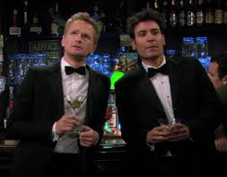

Our Story
How Ted and Barney Met
Ted Mosby and Barney Stinson first crossed paths at MacLaren’s Pub, their favorite hangout spot in New York City. At the time, Ted had just moved to the city and was working as a junior architect, while Barney was already a slick, confident businessman with a mysterious job. Barney was drawn to Ted’s sincerity and earnestness, qualities that were the polar opposite of his own.
Their meeting began with an odd conversation initiated by Barney’s infamous line: “Haaaave you met Ted?” Barney was trying to set Ted up with a stranger at the bar, but their interaction quickly turned into an impromptu life lesson from Barney about “living legendary.” That night, Barney took Ted under his wing, and they bonded over their shared love of New York, their struggles with relationships, and their contrasting approaches to life.
As their friendship blossomed, Ted learned to embrace Barney’s wild lifestyle, while Barney found himself appreciating Ted’s more romantic and thoughtful side. Their dynamic became a cornerstone of the series, showcasing how two very different personalities can complement each other and create unforgettable adventures.
From that fateful night at MacLaren’s, Ted and Barney embarked on a journey filled with laughter, heartbreak, and life lessons. Their friendship became a testament to the idea that opposites attract, and together they navigated the ups and downs of love, friendship, and the pursuit of happiness in the bustling city of New York.
As the series progressed, their bond deepened, and they became each other's confidants, partners in crime, and brothers. Their adventures included everything from legendary parties to heartfelt moments of vulnerability, making them one of the most beloved duos and owners in history.